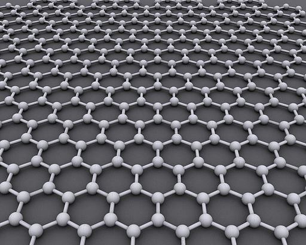

Graphene
Graphene (/ˈɡræfiːn/[1]) is an allotrope of carbon consisting of a single layer of atoms arranged in a two-dimensional honeycomb lattice[2][3] nanostructure.[4] The name is derived from "graphite" and the suffix -ene, reflecting the fact that the graphite allotrope of carbon contains numerous double bonds.
Scientists theorized the potential existence and production of graphene for decades. It has likely been unknowingly produced in small quantities for centuries, through the use of pencils and other similar applications of graphite. It was possibly observed in electron microscopes in 1962, but studied only while supported on metal surfaces.[12]
History
Structure of graphite and its intercalation compounds
The theory of graphene was first explored by P. R. Wallace in 1947 as a starting point for understanding the electronic properties of 3D graphite. The emergent massless Dirac equation was first pointed out in 1984 separately by Gordon Walter Semenoff,[29] and by David P. DiVincenzo and Eugene J. Mele.[30] Semenoff emphasized the occurrence in a magnetic field of an electronic Landau level precisely at the Dirac point. This level is responsible for the anomalous integer quantum Hall effect.[31][32][33]
Structure
Bonding
Three of the four outer-shell electrons of each atom in a graphene sheet occupy three sp2 hybrid orbitals – a combination of orbitals s, px and py — that are shared with the three nearest atoms, forming σ-bonds. The length of these bonds is about 0.142 nanometers.[54][55]
Properties
Electronic
Graphene is a zero-gap semiconductor, because its conduction and valence bands meet at the Dirac points. The Dirac points are six locations in momentum space, on the edge of the Brillouin zone, divided into two non-equivalent sets of three points. The two sets are labeled K and K'. The sets give graphene a valley degeneracy of gv = 2. By contrast, for traditional semiconductors the primary point of interest is generally Γ, where momentum is zero.[54] Four electronic properties separate it from other condensed matter systems.
Electronic spectrum
Electrons propagating through graphene's honeycomb lattice effectively lose their mass, producing quasi-particles that are described by a 2D analogue of the Dirac equation rather than the Schrödinger equation for spin-1/2 particles.[64][65]
Forms
- Monolayer sheets
- Bilayer graphene
- Turbostatic graphene
- Weak interlayer coupling
- 2D electronic structure